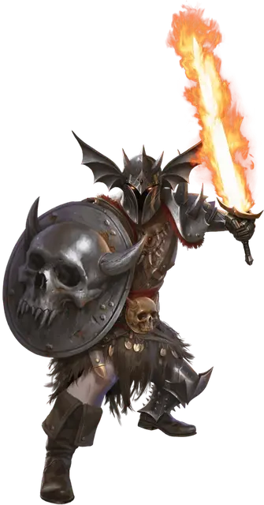

Вардюк
Warduke
Средний Гуманоид (Человек), хаотично-злой, именной НИП

Класс Доспеха 17 (полулаты, щит)
Хиты 78 (12к8 + 24)
Скорость 30 футов
| мод | спас | ||
|---|---|---|---|
| СИЛ | 16 | +3 | +6 |
| ЛОВ | 11 | +0 | +0 |
| ТЕЛ | 14 | +2 | +5 |
| мод | спас | ||
|---|---|---|---|
| ИНТ | 9 | −1 | −1 |
| МДР | 11 | +0 | +0 |
| ХАР | 11 | +0 | +0 |
Навыки Атлетика +6, Запугивание +3
Чувства пассивное Восприятие 10
Языки Общий
Опасность 5 (1800 опыта)
Бонус мастерства +3
Особенности
Особое снаряжение. Вардюк носит шлем ужаса [dread helm] и орудует длинным мечом язык пламени [flame tongue].
Действия
Мультиатака. Вардюк совершает три атаки Языком пламени или Кинжалом.
Язык пламени. . Рукопашная атака оружием: +6 к попаданию, досягаемость 5 футов, одна цель. Попадание: 7 (1к8 + 3) рубящего урона или 8 (1к10 + 3) рубящего урона при использовании двумя руками, плюс 7 (2к6) урона огнём, если оружие пылает.
Кинжал. . Рукопашная или дальнобойная атака оружием: +6 к попаданию, досягаемость 5 футов или дистанция 20/60 футов, одна цель. Попадание: 5 (1к4 + 3) колющего урона.
Бонусные действия
Пылающий клинок. Вардюк зажигает или гасит свой длинный меч язык пламени. Когда он горит, он излучает яркий свет в пределах 40 футов и тусклый свет еще на 40 футов.
Второе дыхание (перезаряжается после короткого или продолжительного отдыха). Вардюк восстанавливает 13 хитов.
Описание
Услуги Вардюка как безжалостного наемного убийцы можно легко купить. Злой мечник время от времени служит Келеку в качестве соратника и компаньона по приключениям. Он не очень умен, и именно поэтому оставляет составление заговоров и интриг другим.
Как выглядит Вардюк под своим ужасным шлемом? Никто не знает. Он никогда не снимает шлем, чтобы показать свое лицо другим, но под ним скрывается лицо мрачного, покрытого ужасными шрамами гладиатора.